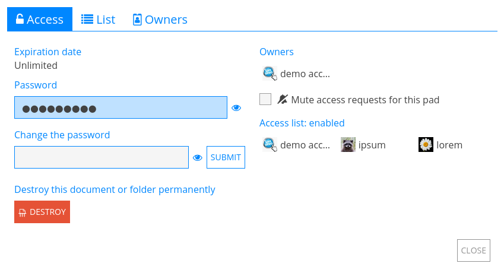

Compartir / Acceso#
Compartir y Acceso son los dos menús para gestionar cómo otros usuarios pueden interactuar con tus documentos en CryptPad.
Desde la barra de herramientas del documento: Compartir y Acceso en el centro.
Desde el CryptDrive: Haz
click derechoen un documento > Compartir o Acceso.
Compartir#
Hay tres formas de compartir un documento: Compartir con contactos, Compartir un enlace, y Incrustar. En cada caso, los derechos de acceso pueden configurarse para autorizar al destinatario a editar el documento o solo a verlo.
Derechos de acceso#
Existen 4 niveles de permisos:
Ver: Solo lectura, sin posibilidad de editar el documento.
Presentar: Solo lectura del contenido renderizado del documento, disponible en Código / Markdown y Diapositivas aplicaciones.
Editar: Ver y realizar cambios en el documento.
Ver una vez y autodestruir: Solo lectura una vez. Una vez que el enlace es abierto por el destinatario, el documento se elimina de manera permanente. Logged in users
Nota
Si un documento ya está almacenado en el CryptDrive de un usuario con derechos de edición, el "enlace de edición" se muestra en las propiedades del documento aunque el usuario esté en modo vista.
Compartir con contactos#
Usuarios registrados
Este es el método recomendado para compartir documentos de manera segura en CryptPad. Cuando se comparten directamente con contacts, los enlaces de documentos nunca salen de la plataforma cifrada de CryptPad. Esto evita que los datos se filtren a terceros.

Para compartir con uno o más contactos:
Compartir en la barra de herramientas del documento > Contactos.
Right clicken el documento en CryptDrive > Compartir > Contactos.
Entonces:
Selecciona access rights.
Selecciona los contactos o equipos con los que deseas compartir.
Compartir botón.
Nota
Al compartir con contactos, ellos reciben una notificación. Al compartir con un equipo, el documento se añade directamente al CryptDrive del equipo.
Compartir un enlace#
La pestaña enlace proporciona enlaces que se pueden compartir a través del medio que prefieras. Dependiendo de cómo envíes el enlace, este método puede presentar riesgos de seguridad. Para añadir un nivel de seguridad, se recomienda agregar una password a tu documento antes de compartir el enlace.

Para copiar el enlace a un documento:
Desde el documento: Compartir en la barra de herramientas > Enlace.
Desde CryptDrive :
Right clicken el documento > Compartir > Enlace.
Entonces:
Seleccionar access rights y opciones adicionales:
Modo de incrustación oculta la barra de herramientas y la lista de usuarios.
Vista previa permite verificar cómo se verá el enlace antes de enviarlo.
Copiar el enlace.
Enviar el enlace.
Incrustar#
Incrustar permite que un documento de CryptPad se muestre en una página web.

Para incrustar un documento:
Desde el documento : Compartir en la barra de herramientas > Incrustar.
Desde CryptDrive :
Right clicken el documento > Compartir > Incrustar.
entonces
Selecciona access rights.
Copiar el código incrustado.
Pega el código en una página web.
Acceso#
Usuarios registrados
Este menú se utiliza para restringir el acceso a un documento o carpeta compartida:
Desde el documento: Acceso.
Desde CryptDrive:
Right clicken el documento o carpeta compartida > Acceso.
Pestaña de acceso#

Esta pestaña resume todas las modalidades de acceso al documento:
Fecha de caducidad: Fecha en la que el documento será eliminado. Esta fecha se establece al crear el documento y no se puede modificar posteriormente.
Contraseña: Muestra si se ha establecido una contraseña. Se puede establecer una nueva contraseña o modificar una existente.
Propietarios: Lista todos los owners del documento.
- Solicitudes de derechos de edición:Solicitar derechos de edición: Para usuarios con derechos de acceso solo lectura.Silenciar solicitudes de acceso para este pad: Oculta las solicitudes de derechos de edición para este documento. Document owners
Lista de acceso: Muestra la access list e indica si está habilitada.
Destruir: Elimina el documento permanentemente.
Lista de acceso#
Document owners

La lista de acceso restringe el acceso al documento. Una vez activada, los usuarios que no estén en la lista no podrán acceder al documento, incluso si lo tienen almacenado en su CryptDrive.
Para habilitar la lista de acceso, marca Habilitar lista de acceso. Los propietarios del documento están en la lista por defecto y no pueden ser eliminados.
Para añadir contactos o equipos a la lista:
Seleccionarlos en la lista de contactos a la derecha.
Adiciónalos a la lista con el botón .
Para eliminar un usuario o equipo de la lista, utiliza el botón junto a su nombre.
Propietarios#

Esta pestaña se utiliza para gestionar la propiedad del documento. Los propietarios de un documento tienen los siguientes permisos:
Habilita una lista de acceso.
Habilita una contraseña.
Adiciona o elimina otros propietarios.
Destruir el documento.
La propiedad de un documento se establece cuando creating it.
Nota
Si un documento se crea sin propietarios, nadie tiene permisos para gestionar su propiedad. No puede ser destruido permanentemente por nadie, pero puede ser eliminado desde CryptDrive y se destruirá automáticamente después de 90 días de inactividad.
Document owners
Para añadir usuarios o equipos como propietarios:
Seleccionarlos en la lista de contactos a la derecha.
Adiciónalos a la lista con el botón .
Para eliminar un propietario, utiliza el botón junto a su nombre.